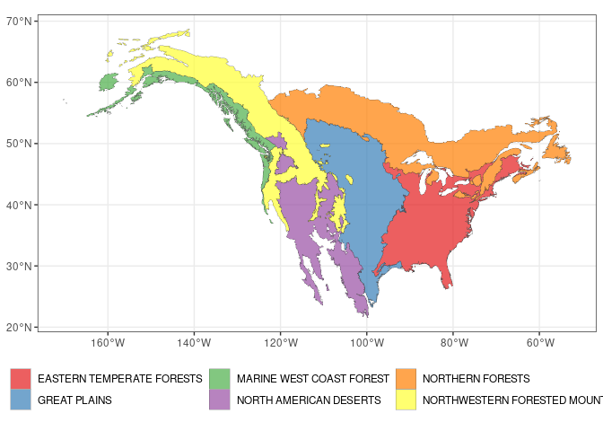
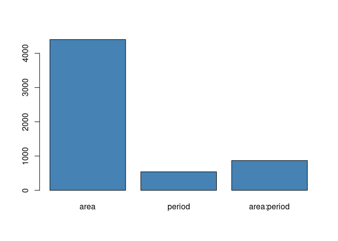
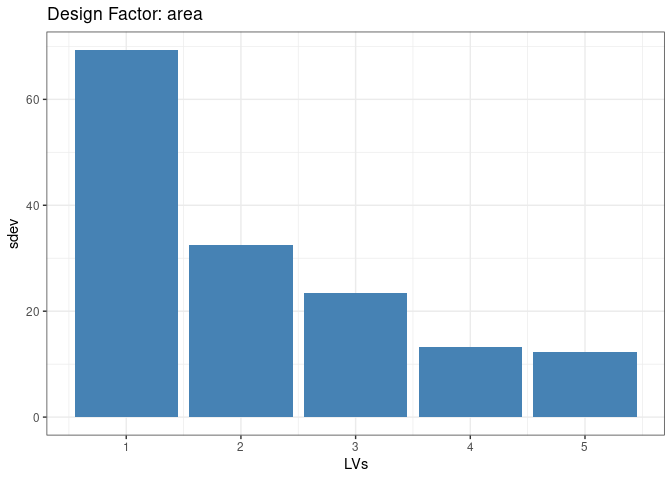
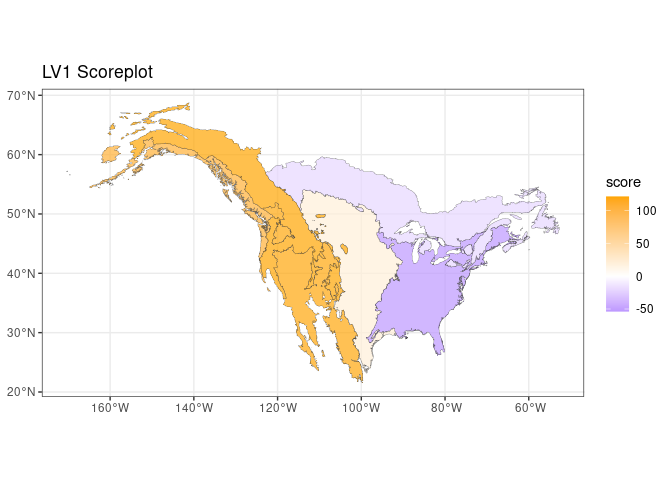
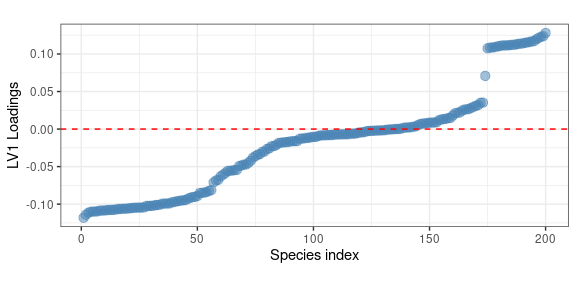
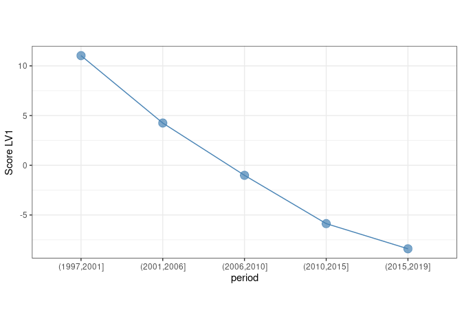
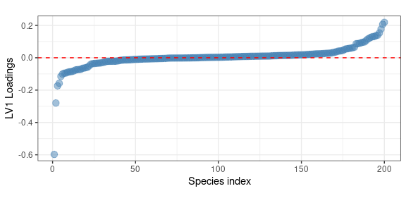
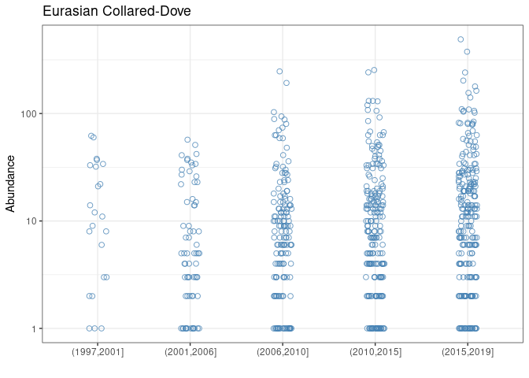
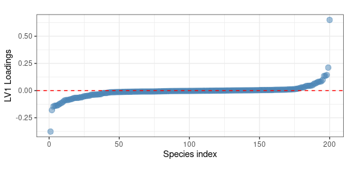

gASCA analysis of the BBS dataset
BBS_gASCA_analysis.RmdIntroduction
This demo illustrate the results of the ASCA analysis of the BBS dataset. The data preparation is discussed in detail in a specific vignette.
## Loading required package: parallelData decomposition
## load the dataset
load("BBS_data.RData")
## create the design data frame
d <- x1 %>%
select(area,period)
## create the data frame with the counts
x <- x1 %>%
select(-c("area","period","RTENO"))Just to have an idea of the size of the dataset let’s look to the size of x:
dim(x)## [1] 2875 200So basically we are dealing with 200 species observed across almost
600 routes. A table of the d data.frame gives a better
representation of the dataset:
## tabular view of the design data frame
table(d)## period
## area (1997,2001] (2001,2006] (2006,2010]
## EASTERN TEMPERATE FORESTS 293 293 293
## GREAT PLAINS 81 81 81
## MARINE WEST COAST FOREST 16 16 16
## NORTH AMERICAN DESERTS 58 58 58
## NORTHERN FORESTS 71 71 71
## NORTHWESTERN FORESTED MOUNTAINS 56 56 56
## period
## area (2010,2015] (2015,2019]
## EASTERN TEMPERATE FORESTS 293 293
## GREAT PLAINS 81 81
## MARINE WEST COAST FOREST 16 16
## NORTH AMERICAN DESERTS 58 58
## NORTHERN FORESTS 71 71
## NORTHWESTERN FORESTED MOUNTAINS 56 56Here we run the decomposition:
dec <- ASCA_decompose(d = d, x = x,
f = "area + period + area:period",
glm_par = list(family = poisson()))The permutation test takes a rather long time (20 minuts on a standard laptop) and it is not included in this demo, anyway only one species out of the 200 included in the analysis was showing a non significant pseudo-R2. For this reason we will keep the full dataset in the following analysis.
Let’s now make a plot of the 6 ecoregions represented in the dataset
## load the ecoregions
ecoregions <- read_sf("na_cec_eco_l1/NA_CEC_Eco_Level1.shp")
ecoregions <- st_transform(ecoregions ,crs=4326) %>%
st_make_valid() %>%
filter(NA_L1NAME %in% unique(d$area))And now we make the plot
ecoregions %>%
rename("region" = "NA_L1NAME") %>%
ggplot() +
geom_sf(aes(fill = region), col= "gray30", lwd = 0.1, alpha = 0.7) +
scale_fill_brewer(palette = "Set1", name = "") +
theme_bw() +
theme(legend.position = "bottom")
Now we run the svd the three model terms:
LVs <- ASCA_svd(dec$decomposition)As a first general comment let’s consider the norm of the decomposition terms
barplot(dec$terms_L2, col = "steelblue")
The geographic dimension turns out to be by far the most influential factor. What happens with time is interesting: the time effect is indeed more relevant when is combined with the area. This indicate that continental scale trends are expected to be less relevant than population dynamics happening at level of the individual ecoregions.
Effect of the Ecoregion
Let’s now focus on the Ecoregion factor. It’s scree plot is shown below
tibble(sdev = LVs$area$sdev) %>%
slice(1:5) %>%
ggplot() +
geom_col(aes(x = 1:5, y = sdev), fill = "steelblue") +
ggtitle("Design Factor: area") +
xlab("LVs") +
theme_bw()
The previous plot clearly shows that one latent factor is able to capture a large part of the variance. Its associated latent trend can be visualized as a map:
tibble(region = x1$area,
eig_area = round(LVs$area$x[,1],2)) %>%
unique() %>%
right_join(ecoregions, by = c("region" = "NA_L1NAME")) %>%
st_as_sf() %>%
ggplot() +
geom_sf(aes(fill = eig_area), col= "gray30", lwd = 0.1, alpha = 0.7) +
scale_fill_gradient2(low = "blue", mid = "white", high = "orange", midpoint = 0, name = "score") +
ggtitle("LV1 Scoreplot") +
theme_bw() 
The presence of a clear east-west trend is clear, interestingly the three western ecological regions show a comparable importance in this latent trend The loadings of this latent factor can be used to investigate which species are mainly contributing to this trend:
LVs$area$rotation[,1] %>%
as_tibble(rownames = "AOU") %>%
arrange(value) %>%
mutate(pos = seq_along(value)) %>%
ggplot() +
geom_point(aes(x = pos,y = value), col = "steelblue", alpha = 0.5, size = 3) +
geom_hline(yintercept = 0, col = "red", lty = 2) +
xlab("Species index") +
ylab("LV1 Loadings") +
theme_bw() +
theme(aspect.ratio = 0.4)
Interestingly, the previous plot highlights the presence of a well identified group of species (a sort of metapopulation) which are consistently showing large positive loadings. In terms of spatial distribution this is associate to a larger abundance in the western US regions. Hereafter we show a map showing the abundance of the species showing the larger positive loadings:
## identify the specie showing the larger loadings
top_LV1 <- names(sort(LVs$area$rotation[,1], decreasing = TRUE)[1])
## plot its distribution over a map
x1 %>%
select(area, all_of(top_LV1)) %>%
group_by(area) %>%
summarize(across(all_of(top_LV1),~ sum(.x))) %>%
right_join(ecoregions, by = c("area" = "NA_L1NAME")) %>%
st_as_sf() %>%
ggplot() +
geom_sf(aes(fill = log10(`4130`+1)), col= "gray30", lwd = 0.1, alpha = 0.7) +
scale_fill_gradient2(low = "white", high = "orange", name = "Abundance (log)") +
ggtitle(species_table %>% filter(AOU == "4130") %>% pull(English_Common_Name)) +
theme_bw() 
The expected trend is fully confirmed by the previous plot. An opposite trend is expected for the species showing large negative loadings. Interestingly no clustering in the loadings seems to be present there.
Effect of the period
If we consider the effect of the period alone and, another time, we plot the first eigentrend
tibble(period = x1$period,
eig_trend = round(LVs$period$x[,1],2)) %>%
unique() %>%
ggplot() +
geom_point(aes(x = period, y = eig_trend), col = "steelblue", size = 4, alpha = 0.7) +
geom_line(aes(x = period, y = eig_trend, group = 1), col = "steelblue") +
ylab("Score LV1") +
theme_bw() +
theme(aspect.ratio = 0.5)
We identify a clear decreasing pattern along the 5 year bins. As before, the loadings of this eigentrend can be used to identify the species which are mostly contributing to this trend
LVs$period$rotation[,1] %>%
as_tibble(rownames = "AOU") %>%
arrange(value) %>%
mutate(pos = seq_along(value)) %>%
ggplot() +
geom_point(aes(x = pos,y = value), col = "steelblue", alpha = 0.5, size = 3) +
geom_hline(yintercept = 0, col = "red", lty = 2) +
xlab("Species index") +
ylab("LV1 Loadings") +
theme_bw() +
theme(aspect.ratio = 0.4)
Here the larger (negative) contributor is:
## identify the species showing the larger loadings
top_LV1_period<- names(sort(LVs$period$rotation[,1])[1])
species_table %>% filter(AOU == top_LV1_period) %>% pull(English_Common_Name)## [1] "Eurasian Collared-Dove"and its measured trend is the following
x1 %>%
ggplot() +
geom_point(aes(x = period, y = `22860`), position = position_jitter(width = 0.1),
size = 2, col = "steelblue", alpha = 0.8, pch = 1) +
scale_y_log10() +
ggtitle(species_table %>% filter(AOU == top_LV1_period) %>% pull(English_Common_Name)) +
ylab("Abundance") +
xlab("") +
theme_bw()## Warning: Transformation introduced infinite values in continuous y-axis
## Warning: Removed 2183 rows containing missing values (geom_point).
speaking of a strong average increase in the observation period. This is exactly what was observed for the Eurasian Collared-Dove, which is native to Asia, and has invaded North America from the late 1970s. After the first observations in Florida, the species has increased in abundance and spread rapidly across the continent.
Effect of the interaction
Let’s finally consider the first LV of the interaction term. In terms of variable importance
LVs$`area:period`$rotation[,1] %>%
as_tibble(rownames = "AOU") %>%
arrange(value) %>%
mutate(pos = seq_along(value)) %>%
ggplot() +
geom_point(aes(x = pos,y = value), col = "steelblue", alpha = 0.5, size = 3) +
geom_hline(yintercept = 0, col = "red", lty = 2) +
xlab("Species index") +
ylab("LV1 Loadings") +
theme_bw() +
theme(aspect.ratio = 0.4)
In this case we observe two specific species showing large positive and negative loadings
## extract the specied
species_table %>%
filter(AOU %in% names(sort(abs(LVs$`area:period`$rotation[,1]), decreasing = TRUE)[1:2])) %>%
pull(English_Common_Name)## [1] "Eurasian Collared-Dove" "Swainson's Hawk"Interestingly one of them is another time the Eurasian Collared-Dove. This means that this species not only was showing a large contribution on the period factor - i.e. a large variation in time - but also an important dependence of that variation on the ecoregion. This trend is clearly shown in the following plot
x1 %>%
select(area, period, `22860`) %>%
group_by(area,period) %>%
summarize(I = sum(`22860`)) %>%
right_join(ecoregions, by = c("area" = "NA_L1NAME")) %>%
st_as_sf() %>%
ggplot() +
geom_sf(aes(fill = log10(I+1)), col= "gray30", lwd = 0.1) +
facet_wrap(~ period, nrow = 1) +
scale_fill_gradient2(low = "white", mid = "orange", high = "red", midpoint = 2, name = "Abundance (log)") +
ggtitle(species_table %>% filter(AOU == "22860") %>% pull(English_Common_Name)) +
theme_bw() +
theme(legend.position = "bottom")## `summarise()` has grouped output by 'area'. You can override using the `.groups`
## argument.
Which clearly highlights its progressive spread over North America starting from the late nineties.